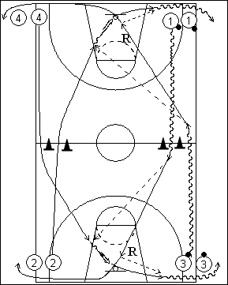

Catégorie : FASTBREAK (Fb-001)
Déroulement
- Quatre files. Les ballons sont en 1 et 3.
- 1 et 4 partent en même temps. 1 dribble jusqu’à la ligne médiane et effectue la longue passe à 4 pour le lay-up. 1 effectue le rebond et passe à 4.
- 3 et 2 partent également en même temps et effectuent le même travail vers l’autre panneau.
-1 va en 2, 4 va en 3 après la passe de 1. 3 va en 4, 2 va en 1 après la passe de 3.
-Après 3 minutes, 1 et 4 changent de file; Idem pour 2 et 3, les ballons restant où ils sont.
Coaching points
- Séquences de la contre-attaque travaillées : le dribble et la longue passe.
- Il s’agit donc d’un dribble haut jusqu’à la ligne médiane et d’une passe précise pour que le partenaire puisse réaliser le lay-up sans effectuer de dribble.